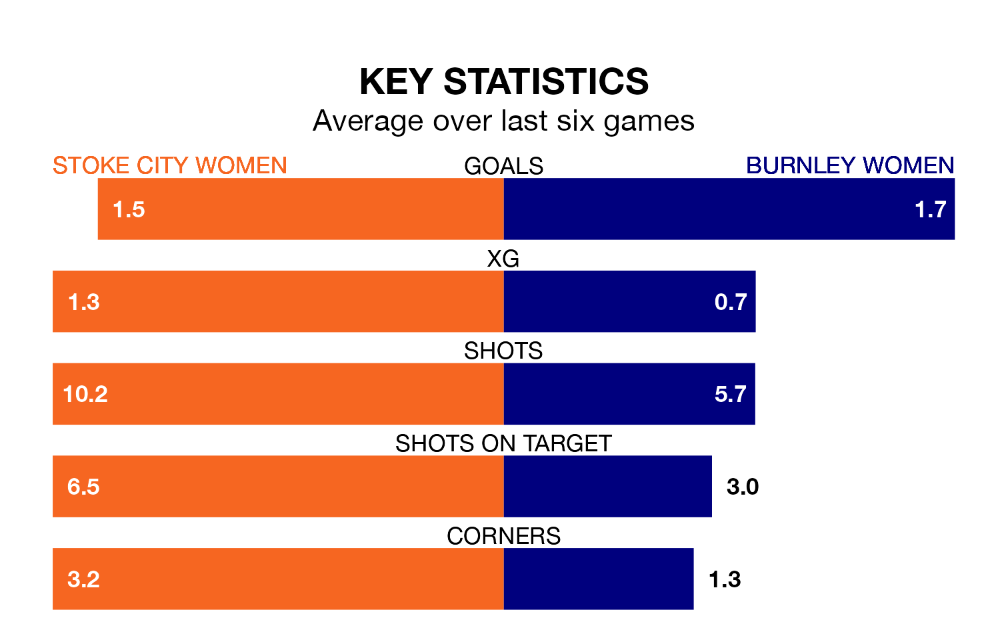

Burnley Women travel to Norton Cricket Club & Miners Welfare Institute for Sunday's early match against Stoke City Women looking to bounce back from defeat last time out in Women's National League Premier Division North.
Burnley, who sit second in the league after 11 games, fell to a 2-1 away defeat to Nottingham Forest Women on January 28.
They face a Stoke City side who secured a draw in their last match, a 0-0 tie with Wolverhampton Wanderers Women, and who sit eighth in the table.
With 26 goals in 11 games so far this season, Burnley are the league's joint-third-highest scorers with 2.4 goals per game. And they are conceding fewer than average, letting in 10 goals at a rate of 0.9 per game.
Stoke City, meanwhile, are average scorers, with 1.8 goals per game. They have conceded 2.1 goals per game.
In the last five years, Stoke City and Burnley have played each other on four occasions. Burnley won all of them.
On average, Stoke City scored 0.8 goals and Burnley 3.2 in those matches.
Their last meeting was on April 9, when Burnley won 7-2 away.
The hosts are in mixed form in Women's National League Premier Division North, with two wins and two draws from their last six games.
With three wins and two draws over that period, the away team's form is better – they have taken 11 points from 18, compared to Stoke City's eight.
Updated: 10:03 (UTC), 30/01/24